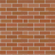

Hi, there! This is a game. This is a game, where you have to eat everything – girls, worms, walls, girls… mmm! Girls! )))
We did our best to make the gameplay as user friendly as possible, though we decided to make some points more clear (just in case something would leave you perplexed during the game!)
1. The main purpose of the game is to eat and to grow! When you eat anything but walls – you grow. But! If you eat walls – sorry! – you get smaller. The longer you stay the size you are, the more likely you beat the record.
2. BioReactor. Information is not available. Just try it.
3. Speed. Everything pivots upon the speed, so while being a small and green wormling (supposing, probably, that you look like a packman), you move very slowly, as slowly as leisurely walking women. Eating more, you’re getting bigger and your speed increases.
 4. Walls. The walls are those strange brick constructions placed in various parts of the playground. After becoming a certain size you can EAT them! Sometimes it’s useful – i.e., when there is your friend/enemy/girl in bikini hiding behind it, but remember: each wall makes you shorter. So you can be 10 segments long, you can have 5 walls eaten, and stop on the 6th wall not being able to eat any more. By the way, meeting the wall or your own tail on the way doesn’t mean you’ve lost the game (not as in some other games you know – nice, isn’t it? ))), but you stay still in one place allowing others to eat you (what an ignominious end!). NB: you can’t eat all the walls – they REGENERATE!
5. Other worms. Those are guys who would like to know what a bioreactor is and why it exists. You can beat them using various strategies: 1. Make love, not war! Run away, eat the girls, grow fast and stay alive as long as you can! 2. Fight! Grow faster, and eat them all biting their heads off. That you can do face to face only, and only if you are bigger. If you are of the same size – oops, mission impossible. You both will be staying together without moving until you change the direction. 3. Eat the most delicious parts of your enemies, the tails! Attention – bonus! Once you have ripped the tail off, the previously eaten people start running out of it, and YOU CAN HAVE THEM ALL!
If you want to be awesome, just try to find your own strategy and ENJOY!